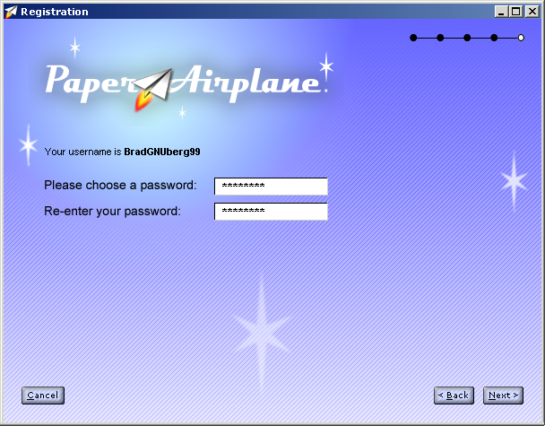
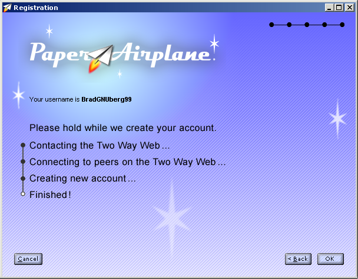

| | |
Table of Contents | Last | Next
Registration
The first time you run Paper Airplane you will be prompted to register with the Registration Wizard. The Registration Wizard explains what Paper Airplane is, makes it possible to choose a unique username, and allows you to choose a password.
Every user in the Two Way Web has a unique username, such as BradNeuberg or Huckleberry. Special security information, known as a public and a private key, are associated with each of these usernames, and are used to ensure that if someone claims they are a certain user that they can be validated as that user. Registration is completely free, and information such as your real name or email address are not associated with you or stored on foreign servers.
Rather than signing into each Two Way Web Site you visit, you only have to sign into the Paper Airplane browser once when you run the program. Afterwards you are automatically signed into each Two Way Web Site.
Important: In the Paper Airplane 1.0 release you are restricted to signing in from the computer you registered your account with. This is because special security information is stored on your local computer, rather than on a centralized machine. You can not sign-in using an account from an Internet cafe, for example, unless you setup your account from that cafe.
The two steps of the Registration Wizard explain why you would want to use Paper Airplane:
Registration Wizard Step 1
Registration Wizard Step 2
A small ticker tape, in the white field above, shows a continious stream of possible Two Way Web Site names in the second step of the Registration Wizard.
As you progress through the Registration Wizard the tiny circles in the upper-right will fill in:
Wizard Bubbles
In the third step you can choose a username:
Your username can be anywhere from three characters to thirty characters and can have letters, spaces, and numbers. However, they must start with a letter rather than a space or number. Your username is case-insensitive, which means that Fidget666, fidget666, and FiDgEt666 all refer to the same person.
Press the OK button when you have chosen your username. Paper Airplane will now sign into the Two Way Web to see if that username is available. Status information is presented as this process occurs:
Registration Wizard Step 3 for a Good Username
If a step is successful, such as being able to contact the Two Way Web, then a black circle will appear next to that step. If a step fails, for example if a username is already taken, then the circle will become filled with red. The reason for the failure will also be printed in red next to the circle:
Registration Wizard Step 3 for a Username that is Already Taken
If a username is already taken, an alternative username will be suggested in the username field that is still available.
If the username is available, then the word Finished! will appear. You can now press the Next button to progress to the next step, which is choosing a password:

Registration Wizard Step 4
After choosing a password, the Two Way Web will be contacted and your account will be created:

Registration Wizard Step 5
If everything goes correctly, the OK button will become enabled. Press this button to close the Registration Wizard. The Sign-In Dialog will now appear, allowing you to sign-in using your new account.
If you press the Cancel button at any time in the Registration Wizard then the wizard will disappear and the Sign-On Dialog Window will appear. You can now sign-in with a different username or re-run the Registration Wizard.